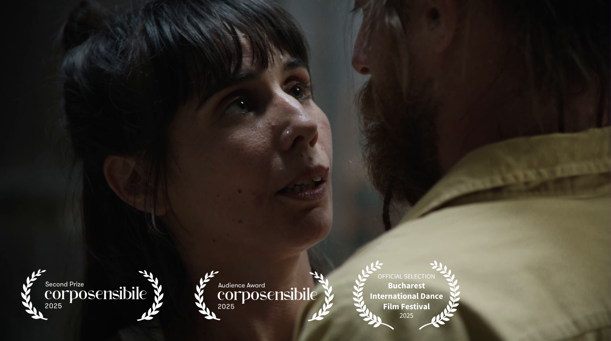
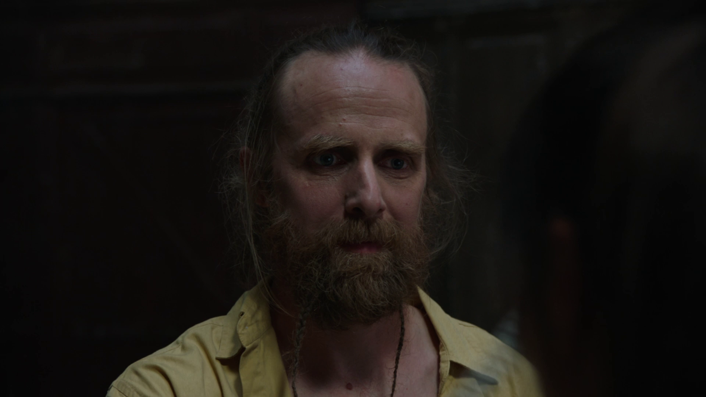
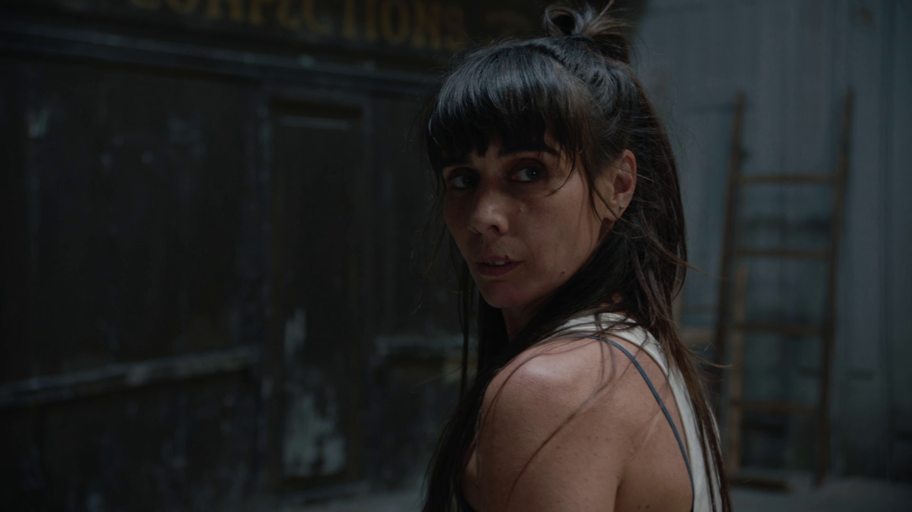

The dance film ‘On my way to you’ originates from a performance created and executed by Andreia Rodrigues and Miroslav Kochánek. In this duet, a couple explores closeness through movement, seeking ways to come closer both physically and mentally. How can one (re)encounter the other? One possible answer: rope flow. Andreia and Miro reinterpret this workout trend to seek connection, resulting in a physical duet where the performers strive to keep two heavy ropes constantly in motion. The play that arises from this endeavor involves risk and physical exertion, yet the pursuit of a shared rhythm motivates them to persevere.


